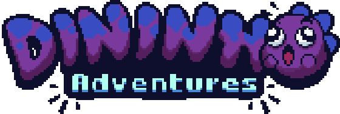

<!DOCTYPE html><html lang="pt-BR"><head><meta charset="UTF-8"/><meta name="viewport" content="width=device-width, initial-scale=1.0"/><title>Dininho Adventures</title><link rel="stylesheet" href="https://cdnjs.cloudflare.com/ajax/libs/tiny-slider/2.9.2/tiny-slider.css"/><link rel="stylesheet" href="https://fonts.googleapis.com/css2?family=Bungee&amp;family=Nunito&amp;display=swap"/><link rel="stylesheet" href="style.css"/></head><body></body></html><header class="game" id="game-screen"><div class="game__light"></div><div class="game__ground" style="background-image: url('./images/game_floor.png'); width: 100%; height: 164px"></div></header><section><h1>Ajude Dininho, nesta que pode...<p>...ser a aventura mais heroica de sua vida! Só mesmo alguém muito
maligno poderia ter a frieza de roubar os ovos de uma mamãe dinossauro
indefesa e Dininho não pode deixar isso assim. Explore este mundo
colorido e perigoso, resgatando todos os bebês indefesos. Mas cuidado,
"Ele" estará te esperando ao final de cada estrada. Eu confio em você!
Vá e seja o herói da Dinolândia.
</p></h1></section><hr class="egg-separator"/><section class="screenshots"><div class="screenshots-slider"><video src="#"></video></div><button class="button">Jogar</button></section><script src="https://cdnjs.cloudflare.com/ajax/libs/tiny-slider/2.9.2/min/tiny-slider.js"></script>